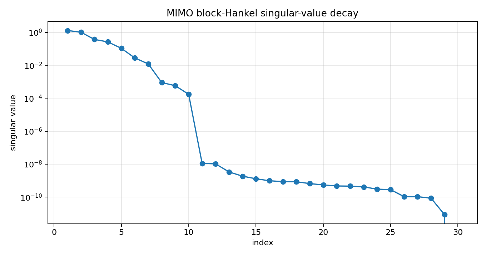
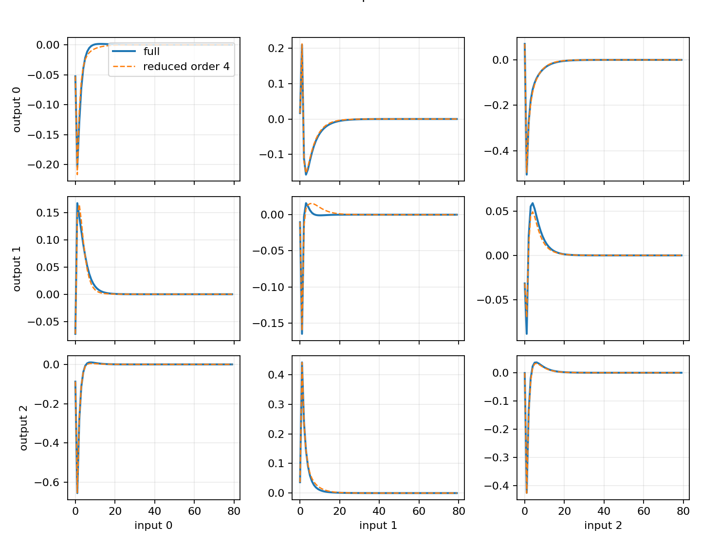
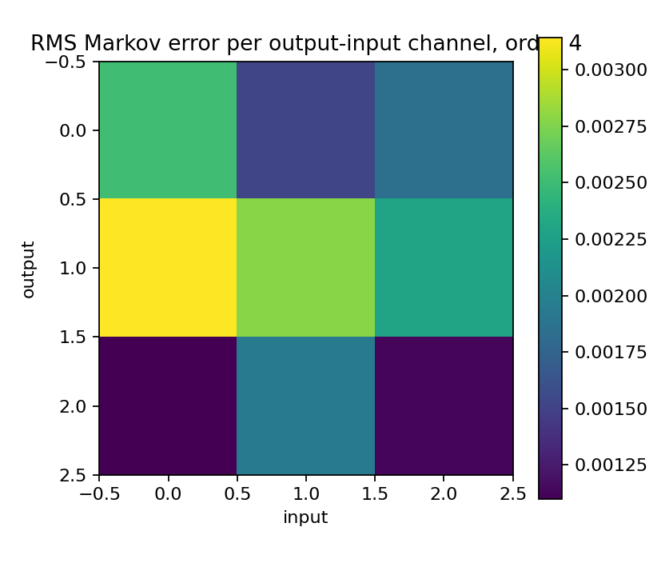

Finite block-Hankel MIMO model reduction¶
Tutorial goal
Generalize the SISO finite-Hankel reducer to MIMO Markov matrices and return a reduced state-space model.
Note
New to the terminology? See the lattice DSP concept map and the causality/data-use guide for how online, offline, block, and MIMO examples should be read.
Context¶
The SISO reducer works with one impulse response. A MIMO system has a sequence of Markov matrices instead, where each matrix maps input channels to output channels at a particular lag. The natural finite-Hankel baseline is therefore a block-Hankel matrix.
This tutorial is deliberately a baseline: it gives a reference MIMO Ho–Kalman/ERA-style reduction as a finite block-Hankel baseline separate from matrix Nehari or AAK optimality claims.
Key idea and equations¶
For Markov matrices M_k with shape outputs x inputs, the finite block-Hankel matrix is
The reduced model is returned as state-space matrices A, B, C, D rather than as scalar
numerator/denominator coefficients.
How to read the result¶
Look for block-Hankel singular-value decay, retained energy, Markov-response error, and stable reduced state matrices.
Run command¶
python examples/mimo_finite_hankel_model_reduction.py
Run status¶
Return code: 0
Captured stdout¶
full state order: 10
inputs: 3 outputs: 3
block Hankel matrix: 72 x 72
leading block-Hankel singular values: [1.314253, 1.043921, 0.377351, 0.26784, 0.108761, 0.028447, 0.012295, 0.000909, 0.000586, 0.000176]
order=2: stable=True, retained_energy=0.925451, relative_markov_error=8.520e-02
order=4: stable=True, retained_energy=0.995798, relative_markov_error=4.148e-03
order=6: stable=True, retained_energy=0.999950, relative_markov_error=6.925e-05
Figures¶
{kind=link}

mimo_block_hankel_singular_values.png¶
{kind=link}

mimo_reduced_markov_responses.png¶
{kind=link}

mimo_reduction_error_heatmap.png¶
Generated data files¶
Source code¶
1"""Tutorial: finite block-Hankel model reduction for a MIMO system.
2
3The SISO finite-Hankel reducer works with one impulse response. The MIMO
4baseline generalizes this to a sequence of Markov matrices M_k, where each
5matrix maps input channels to output channels at lag k.
6
7This tutorial builds a stable coupled 3-input/3-output state-space system,
8computes its Markov parameters, performs finite block-Hankel reduction, and
9compares the reduced Markov responses against the full system.
10"""
11
12from __future__ import annotations
13
14import csv
15import os
16from pathlib import Path
17
18import numpy as np
19
20import lattice_dsp as ld
21
22
23def artifact_dir() -> Path:
24 path = Path(os.environ.get("LATTICE_DSP_ARTIFACT_DIR", "reports/example-artifacts"))
25 path.mkdir(parents=True, exist_ok=True)
26 return path
27
28
29def stable_random_state_space(order: int, outputs: int, inputs: int, seed: int = 7):
30 rng = np.random.default_rng(seed)
31 q, _ = np.linalg.qr(rng.normal(size=(order, order)))
32 radii = np.linspace(0.82, 0.18, order)
33 A = q @ np.diag(radii) @ q.T
34 B = 0.45 * rng.normal(size=(order, inputs))
35 C = 0.45 * rng.normal(size=(outputs, order))
36 D = 0.05 * rng.normal(size=(outputs, inputs))
37 return A, B, C, D
38
39
40def main() -> None:
41 out_dir = artifact_dir()
42
43 full_order = 10
44 inputs = outputs = 3
45 n_markov = 180
46 block_rows = block_cols = 24
47 reduced_orders = [2, 4, 6]
48
49 A, B, C, D = stable_random_state_space(full_order, outputs, inputs)
50 markov = ld.mimo_state_space_markov_response(A, B, C, D, n_markov)
51
52 summary = []
53 reduced_markov = {}
54 for order in reduced_orders:
55 result = ld.finite_hankel_reduce_mimo(
56 markov,
57 reduced_order=order,
58 block_rows=block_rows,
59 block_cols=block_cols,
60 )
61 approx = ld.mimo_state_space_markov_response(result["A"], result["B"], result["C"], result["D"], n_markov)
62 rel_error = float(np.sum((markov - approx) ** 2) / np.sum(markov**2))
63 reduced_markov[order] = approx
64 summary.append(
65 {
66 "order": order,
67 "stable": bool(result["stable"]),
68 "retained_hankel_energy": float(result["retained_hankel_energy"]),
69 "relative_markov_error": rel_error,
70 }
71 )
72
73 csv_path = out_dir / "mimo_finite_hankel_model_reduction_summary.csv"
74 with csv_path.open("w", newline="", encoding="utf-8") as f:
75 writer = csv.DictWriter(f, fieldnames=list(summary[0]))
76 writer.writeheader()
77 writer.writerows(summary)
78
79 hsv = np.asarray(ld.finite_hankel_reduce_mimo(markov, 6, block_rows, block_cols)["hankel_singular_values"])
80 print("full state order:", full_order)
81 print("inputs:", inputs, "outputs:", outputs)
82 print("block Hankel matrix:", f"{block_rows * outputs} x {block_cols * inputs}")
83 print("leading block-Hankel singular values:", [round(float(v), 6) for v in hsv[:10]])
84 for row in summary:
85 print(
86 "order={order}: stable={stable}, retained_energy={retained_hankel_energy:.6f}, "
87 "relative_markov_error={relative_markov_error:.3e}".format(**row)
88 )
89 print(f"wrote {csv_path}")
90
91 try:
92 import matplotlib.pyplot as plt
93 except Exception:
94 print("matplotlib is not installed; skipped figures")
95 return
96
97 fig, ax = plt.subplots(figsize=(8.5, 4.5))
98 idx = np.arange(1, min(30, hsv.size) + 1)
99 ax.semilogy(idx, hsv[: idx.size], marker="o")
100 ax.set_title("MIMO block-Hankel singular-value decay")
101 ax.set_xlabel("index")
102 ax.set_ylabel("singular value")
103 ax.grid(True, alpha=0.3)
104 fig.tight_layout()
105 fig_path = out_dir / "mimo_block_hankel_singular_values.png"
106 fig.savefig(fig_path, dpi=160)
107 print(f"wrote {fig_path}")
108
109 fig2, axes = plt.subplots(outputs, inputs, figsize=(9, 7), sharex=True)
110 t = np.arange(80)
111 for y in range(outputs):
112 for u in range(inputs):
113 ax = axes[y, u]
114 ax.plot(t, markov[: t.size, y, u], linewidth=1.8, label="full")
115 ax.plot(t, reduced_markov[4][: t.size, y, u], "--", linewidth=1.2, label="reduced order 4")
116 ax.grid(True, alpha=0.25)
117 if y == outputs - 1:
118 ax.set_xlabel(f"input {u}")
119 if u == 0:
120 ax.set_ylabel(f"output {y}")
121 axes[0, 0].legend(loc="upper right")
122 fig2.suptitle("Selected MIMO Markov responses: full vs reduced", y=1.02)
123 fig2.tight_layout()
124 fig2_path = out_dir / "mimo_reduced_markov_responses.png"
125 fig2.savefig(fig2_path, dpi=160)
126 print(f"wrote {fig2_path}")
127
128 err = np.sqrt(np.mean((markov - reduced_markov[4]) ** 2, axis=0))
129 fig3, ax3 = plt.subplots(figsize=(5.2, 4.4))
130 im = ax3.imshow(err)
131 ax3.set_title("RMS Markov error per output-input channel, order 4")
132 ax3.set_xlabel("input")
133 ax3.set_ylabel("output")
134 fig3.colorbar(im, ax=ax3)
135 fig3.tight_layout()
136 fig3_path = out_dir / "mimo_reduction_error_heatmap.png"
137 fig3.savefig(fig3_path, dpi=160)
138 print(f"wrote {fig3_path}")
139
140
141if __name__ == "__main__":
142 main()